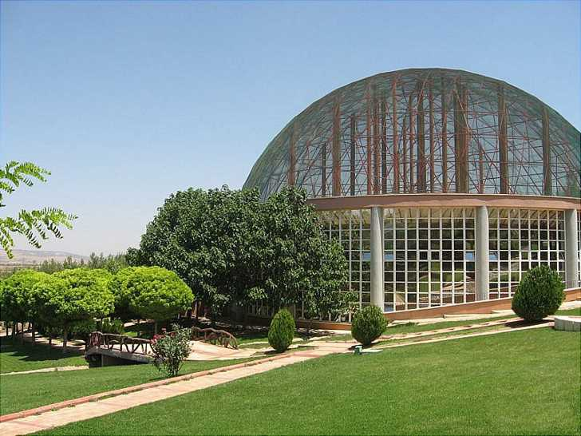

Biyolojik Çeşitlilik ve Gözlem
Kuş Cenneti, yüzlerce farklı kuş türünü doğal yaşam ortamlarına benzer şekilde düzenlenmiş geniş alanlarda ziyaretçilere sunarak doğanın zenginliğini gözlemleme fırsatı verir. Tropik kuşlardan yerel türlere kadar uzanan çeşitlilik, renkli tüyleri, ötüşleri ve davranışlarıyla ziyaretçilere görsel ve işitsel bir şölen yaşatır. Özel gözlem noktaları ve yürüyüş yolları sayesinde kuşların doğal hareketlerini yakından izlemek mümkün olur. Bu bölüm, doğa meraklıları için eşsiz bir gözlem alanı olmanın yanı sıra ekolojik dengelerin anlaşılması açısından da büyük önem taşır.